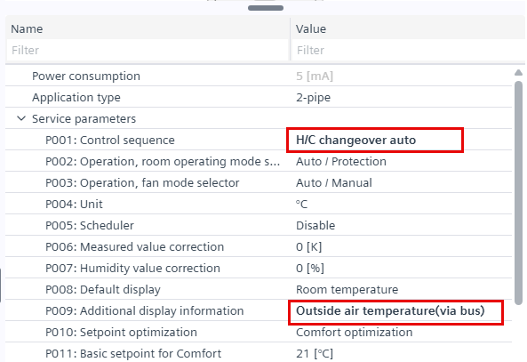
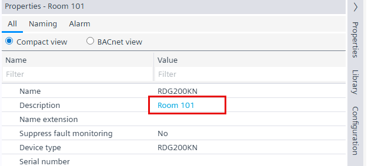

Configuring RDG2 device
Highlighted changes
Changes to the RDG2 configuration editor are highlighted. This makes it easier to see which changes have been made or are missing.

Text entry changed
In the RDG2 editor, texts taken from the library are displayed in black. Manual text changes are displayed in blue.

Further information
- Configuring the RDG2 application type
- Configuring an RDG2 operation for room unit and fan mode
- Configuring an RDG2 window contact or/and presence detector
- Configuring the RDG2 heating/cooling coil demand with zones
- Configuring an RDG2 green leaf trigger command
- Configuring an RDG2 outside air temperature indication
- Configuring an RDG2 changeover functionality